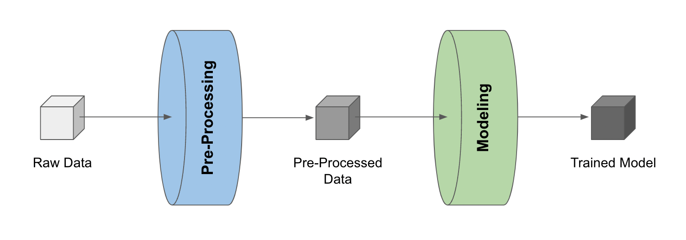

Building Pipelines
Basics
Data science workflows revolve around building and refining pipelines, i.e., a series of processes that transform data into useful information/product (read more about pipelines here).
Traditionally, this is often manual and time-consuming work as data scientists (or production engineers) need to transform messy development code into deployable scripts for the target system (e.g., Airflow).
Having the complete development process stored in artifacts, LineaPy can automate such code transformation, accelerating transition from development to production.
For example, consider a simple pipeline that 1) pre-processes raw data and 2) trains a model with the pre-processed data.
{kind=link}
Once we have the pre-processed data and the trained model stored as LineaPy artifacts (which can be done during development sessions), building a pipeline reduces to “stitching” these artifacts, like so:
import lineapy
# Load artifacts to use in pipeline building
preprocessing_art = lineapy.get("iris_preprocessed")
modeling_art = lineapy.get("iris_model")
# Build an Airflow pipeline using artifacts
lineapy.to_pipeline(
artifacts=[
preprocessing_art.name,
modeling_art.name,
],
pipeline_name="demo_airflow_pipeline",
dependencies={
modeling_art.name: { preprocessing_art.name},
},
output_dir="output/02_build_pipelines/demo_airflow_pipeline/",
framework="AIRFLOW",
)
where
artifactsis the list of artifact names to be used for the pipelinepipeline_nameis the name of the pipelinedependenciesis the dependency graph among artifactsIf artifact A depends on artifacts B and C, then the graph is specified as
{ A: { B, C } }If A depends on B and B depends on C, then the graph is specified as
{ A: { B }, B: { C } }
output_diris the location to put the files for running the pipelineframeworkis the name of orchestration framework to useLineaPy currently supports
"AIRFLOW"and"SCRIPT"If
"AIRFLOW", it will generate files that can run Airflow DAGsIf
"SCRIPT", it will generate files that can run the pipeline as a Python script
Running lineapy.to_pipeline() generates several files that can be used to execute the pipeline from the UI or CLI, including:
<pipeline_name>.py: Contains the artifact code packaged as a function module<pipeline_name>_dag.py: Uses the packaged function(s) to define the pipeline<pipeline_name>_requirements.txt: Lists any package dependencies for running the pipeline<pipeline_name>_Dockerfile: Contains commands to set up the environment to run the pipeline
where <pipeline_name> is demo_airflow_pipeline in the current example.
Note
If you want hands-on practice, check out this tutorial notebook.
Output Files
Let’s take a closer look at these files. First, we have demo_airflow_pipeline.py looking as follows:
import pickle
def iris_preprocessed():
import pandas as pd
df = pd.read_csv(
"https://raw.githubusercontent.com/LineaLabs/lineapy/main/examples/tutorials/data/iris.csv"
)
color_map = {"Setosa": "green", "Versicolor": "blue", "Virginica": "red"}
df["variety_color"] = df["variety"].map(color_map)
df["d_versicolor"] = df["variety"].apply(lambda x: 1 if x == "Versicolor" else 0)
df["d_virginica"] = df["variety"].apply(lambda x: 1 if x == "Virginica" else 0)
pickle.dump(df, open("/Users/sangyoonpark/.lineapy/linea_pickles/JIzXR8u", "wb"))
def iris_model():
from sklearn.linear_model import LinearRegression
df_processed = pickle.load(
open("/Users/sangyoonpark/.lineapy/linea_pickles/JIzXR8u", "rb")
)
mod = LinearRegression()
mod.fit(
X=df_processed[["petal.width", "d_versicolor", "d_virginica"]],
y=df_processed["sepal.width"],
)
pickle.dump(mod, open("/Users/sangyoonpark/.lineapy/linea_pickles/k5pyaTX", "wb"))
We can see that LineaPy used artifacts to automatically 1) clean up their code to retain only essential operations and 2) package the cleaned-up code into importable functions.
And we see demo_airflow_pipeline_dag.py automatically composing an Airflow DAG with these functions:
import os
import demo_airflow_pipeline
from airflow import DAG
from airflow.operators.python_operator import PythonOperator
from airflow.utils.dates import days_ago
default_dag_args = {"owner": "airflow", "retries": 2, "start_date": days_ago(1)}
dag = DAG(
dag_id="demo_airflow_pipeline_dag",
schedule_interval="*/15 * * * *",
max_active_runs=1,
catchup=False,
default_args=default_dag_args,
)
iris_preprocessed = PythonOperator(
dag=dag,
task_id="iris_preprocessed_task",
python_callable=demo_airflow_pipeline.iris_preprocessed,
)
iris_model = PythonOperator(
dag=dag,
task_id="iris_model_task",
python_callable=demo_airflow_pipeline.iris_model,
)
iris_preprocessed >> iris_model
Next, we see demo_airflow_pipeline_requirements.txt listing dependencies for running the pipeline:
matplotlib==3.5.1
numpy==1.21.5
lineapy==0.0.5
Finally, we have the automatically generated Dockerfile (demo_airflow_pipeline_Dockerfile), which facilitates pipeline execution:
FROM apache/airflow:latest
RUN mkdir /tmp/installers
WORKDIR /tmp/installers
# copy all the requirements to run the current dag
COPY ./demo_airflow_pipeline_requirements.txt ./
# install the required libs
RUN pip install -r ./demo_airflow_pipeline_requirements.txt
WORKDIR /opt/airflow/dags
COPY . .
WORKDIR /opt/airflow
CMD [ "standalone" ]
Testing Locally
With these automatically generated files, we can quickly test running the pipeline locally. First, we run the following command to build a Docker image:
docker build -t <image_name> . -f <pipeline_name>_Dockerfile
where <pipeline_name>_Dockerfile is the name of the automatically generated Dockerfile and
<image_name> is the image name of our choice.
We then stand up a container instance with the following command:
docker run -it -p 8080:8080 <image_name>
In the current example where we set framework="AIRFLOW", this will result in an Airflow instance
with an executable DAG in it.